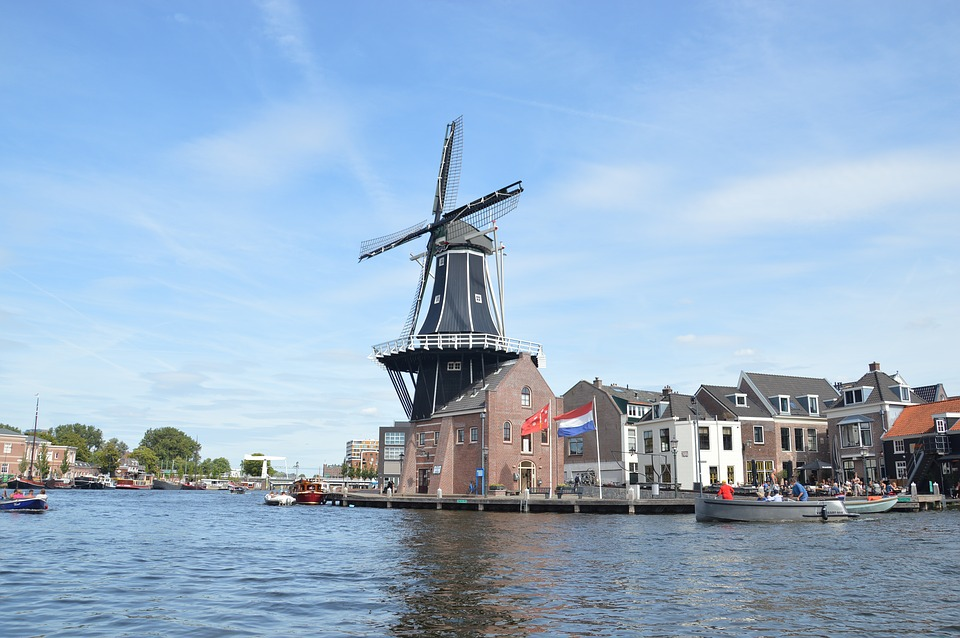
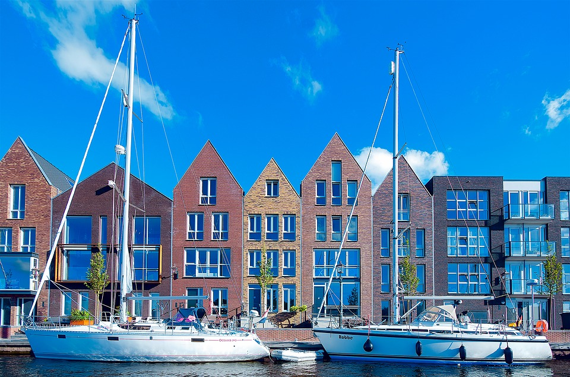

Haarlem
Haarlem is de hoofdstad van de provincie Noord-Holland en heeft circa 160.000 inwoners. Haarlem heeft net als Amsterdam grachten en grachtenpanden. Haarlem wordt bezocht door honderden toeristen per dag die genieten van alle bezienswaardigheden die Haarlem te bieden heeft. Een van de bezienswaardigheden van Haarlem is de Koepelgevangenis. De Koepelgevangenis werd gebouwd van 1899-1901 in Oost-Haarlem en is nu een echte eyecatcher bij toeristen. Ook een bekend gebouw in Haarlem is De Adriaan molen. De molen werd geopend in 1779 en is vandaag de dag een echte toeristen trekpleister. Verder kan je nog héérlijk shoppen in het hartje centrum van Haarlem bij onder andere de ZARA, Hunkemöller, JACK & JONES en de H&M. Ook heeft Haarlem een van de mooiste treinstations van heel Nederland. Als je uitstapt kom je op een sfeervol perron met winkeltjes in stijlen als een ouderwetse treinstation. Ook is de wijk Harlem in New York City vernoemd naar de hoofdstad van Noord-Holland.
 